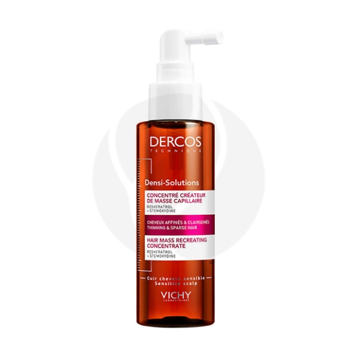
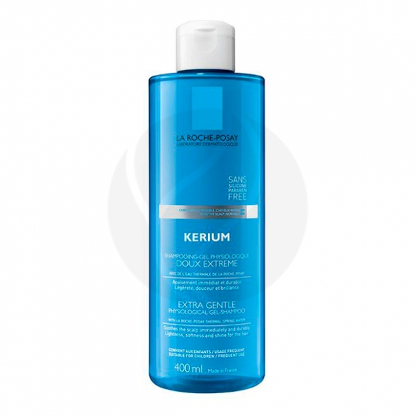
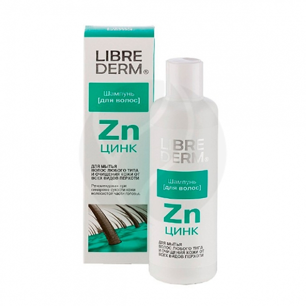

Уход за волосами
| Названия |
Состав |
Цена |
Внешний вид |
| 3629 |
ALCOHOL DENAT. • AQUA / WATER • DIETHYLLUTIDINATE • CITRAL • ETHYL ESTER OF PVM/MA COPOLYMER • GERANIOL • HEXYL CINNAMAL • ISOEUGENOL • LIMONENE • LINALOOL •MENTHA PIPERITA OIL / PEPPERMINT OIL • MENTHOL • RESVERATROL • RHAMNOSE • TOCOPHERYL ACETATE • PARFUM / FRAGRANCE.
|
Vichy Dercos Densi-Solutions сыворотка для роста волос, 100мл |
 |
| 2070 |
Aqua/Water, Sodium Laureth Sulfate, Peg-200 Hydrogenated Glyceryl Palmate, Disodium Cocoamphodiacetate, Polysorbate 20, Glycerin, Peg-7 Glyceryl Cocoate, Citric Acid, Disodium Ricinoleamido Mea-Sulfosuccinate, Hexylene Glycol, Polyquaternium-10, Salicylic Acid, Sodium Benzoate, Sodium Chloride, Sodium Hydroxide, Parfum/Fragrance.
|
La Roche-Posay Kerium Мягкий физиологический шампунь-гель, 400мл |
 |
| 557 |
Вода деминерализованная, лауретсульфат натрия, акриловый сополимер, кокамидопропил-бетаин, децил глюкозид, цинк пиритион, глицерин, Д-пантенол, натрия хлорид, аллантоин, гидроксипропил гуар гидроксипропилтримониум хлорид, лимонная кислота, метилхлоризотиазолинон и метилизотиазолинон, трилон Б, натрия гидроокись.
|
Librederm Hair Care шампунь с цинком, 250мл |
 |